![]()
| Indicator | Interaction | |
|---|---|---|
| + p < 0.1, * p < 0.05, ** p < 0.01, *** p < 0.001 | ||
| (Intercept) | 49.831*** | 48.979*** |
| (1.074) | (1.040) | |
| urbanization | 0.216*** | 0.233*** |
| (0.019) | (0.019) | |
| eu | 2.794+ | 33.097*** |
| (1.419) | (6.595) | |
| eu_urbanization | -0.456*** | |
| (0.097) | ||
| Num.Obs. | 215 | 215 |
| R2 | 0.408 | 0.464 |
Statistical Analysis
Lecture 13: Differences in Differences
Types of Research
Types of Research
Experimental Studies (RCTs)
Observational Studies
- Propensity score matching
- Differences-in-differences
- Instrumental variable analysis
- Regression discontinuity design
Trade-Off of RCTs
RCTs have advantages:
- Researcher manipulates the independent variable
- Participants randomly assigned to reduce bias
However, RCTs can be expensive
Some questions are unethical or impractical
- E.g., effect of Covid on certain populations
Knowing the answers remains important
Quasi-Natural Experiments
Quasi-Natural Experiments
Treatment is not randomly assigned (unlike RCTs)
The researcher cannot manipulate treatment directly
The researcher exploits natural variation in \(X\)
Example: comparing students with different teachers
- Cannot randomly assign students to teachers
- Can use scheduling conflicts as natural variation
scheduling conflicts \(\rightarrow\) teacher assignment \(\rightarrow\) outcomes
scheduling conflicts \(\perp\) educational outcomes (where \(\perp\) = independent)
Methods for Quasi-Natural Experiments
- Differences-in-differences
- Instrumental variable analysis
- Regression discontinuity design
Review: Indicators & Interactions
Indicators and Interactions: Review
Indicators shift the intercept for a group — Interactions change the slope
Why This Matters for DiD
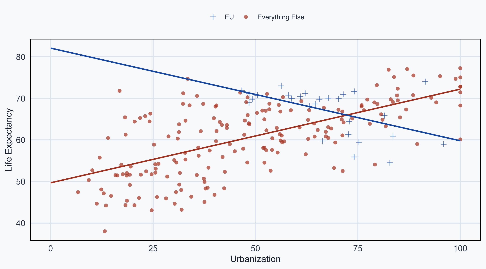
DiD uses both: a group indicator (\(\beta_1\)) and a group \(\times\) time interaction (\(\beta_3\))
Differences-in-Differences
Card & Krueger (1993)
What is the effect of raising the minimum wage?
Does it increase or decrease jobs?
- NJ raised minimum wage: $4.25 \(\rightarrow\) $5.05 (1992)
- Jobs per restaurant before: 20.44
- Jobs per restaurant after: 21.03
Card & Krueger: US Map
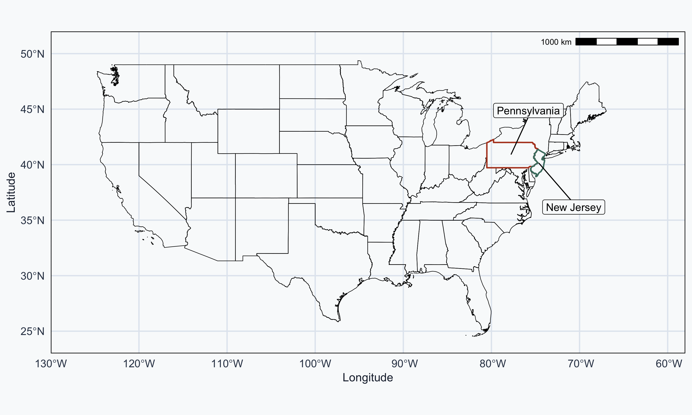
Card & Krueger: NJ and PA
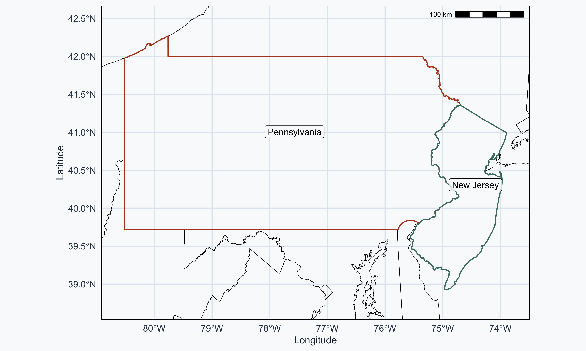
Is the NJ Change Causal?
\[\text{NJ}_{\text{Before}} = 20.44 \qquad \text{NJ}_{\text{After}} = 21.03 \qquad \Delta = 0.59\]
Is \(\Delta = 0.59\) a causal effect?
No. We only look at the treatment group.
Cannot separate treatment from other simultaneous factors
NJ Before vs After
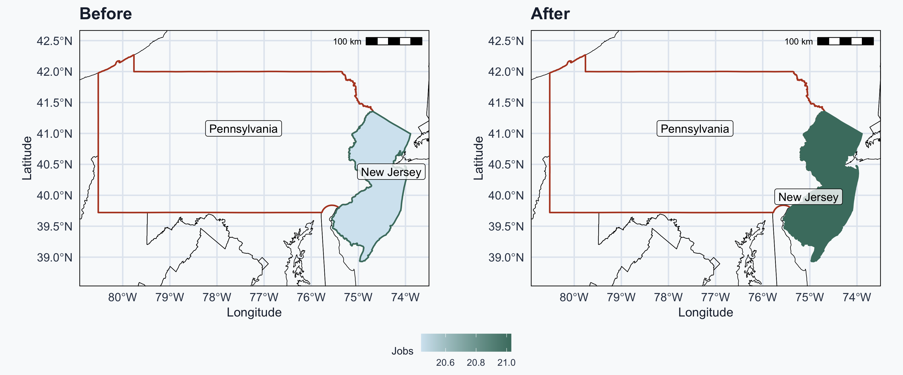
Adding Pennsylvania as Control
Card & Krueger compare NJ to a neighboring state:
\[\text{PA}_{\text{After}} = 21.17 \qquad \text{NJ}_{\text{After}} = 21.03 \qquad \Delta = -0.14\]
Is \(\Delta = -0.14\) a causal effect?
No. We only look at post-treatment outcomes.
NJ and PA may differ in many other ways.
NJ vs PA After
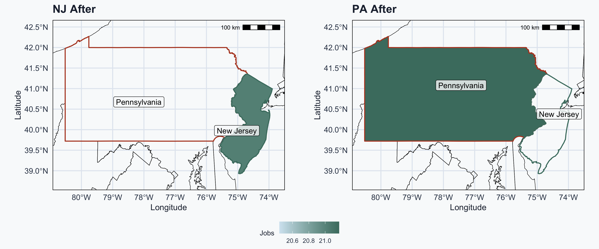
DiD Framework: Basic
| Group | Before | After |
|---|---|---|
| Control | A — not treated | B — not treated |
| Treatment | C — not treated | D — treated |
DiD Framework: Within-Unit Change
| Group | Before | After | \(\Delta\) (After \(-\) Before) |
|---|---|---|---|
| Control | A | B | B \(-\) A |
| Treatment | C | D | D \(-\) C |
\(\Delta\) (After \(-\) Before) = within-unit change
DiD Framework: Across-Group Change
| Group | Before | After | \(\Delta\) (After \(-\) Before) |
|---|---|---|---|
| Control | A | B | B \(-\) A |
| Treatment | C | D | D \(-\) C |
| \(\Delta\) (T \(-\) C) | C \(-\) A | D \(-\) B |
\(\Delta\) within \(-\) \(\Delta\) across = Difference-in-Differences
DiD Framework: Card & Krueger Numbers
| Group | Before | After | \(\Delta\) |
|---|---|---|---|
| Control (PA) | A = 23.33 | B = 21.17 | \(-2.16\) |
| Treatment (NJ) | C = 20.44 | D = 21.03 | \(0.59\) |
| \(\Delta\) | \(-2.89\) | \(-0.14\) |
\[\text{DiD} = (0.59) - (-2.16) = \textbf{2.75}\]
or equivalently: \((-0.14) - (-2.89) = \textbf{2.75}\)
DiD Visualized: Points
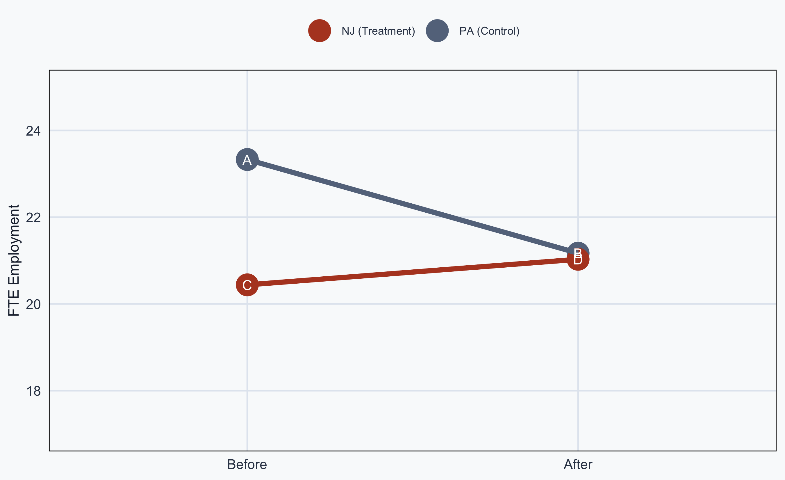
DiD Visualized: Counterfactual
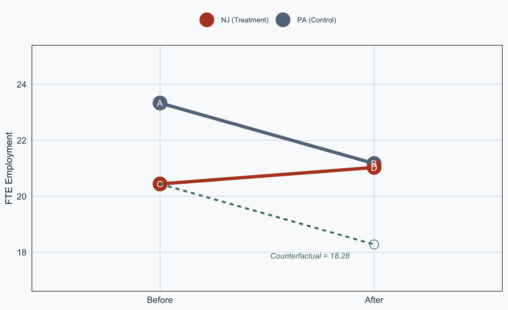
DiD Visualized: Causal Effect
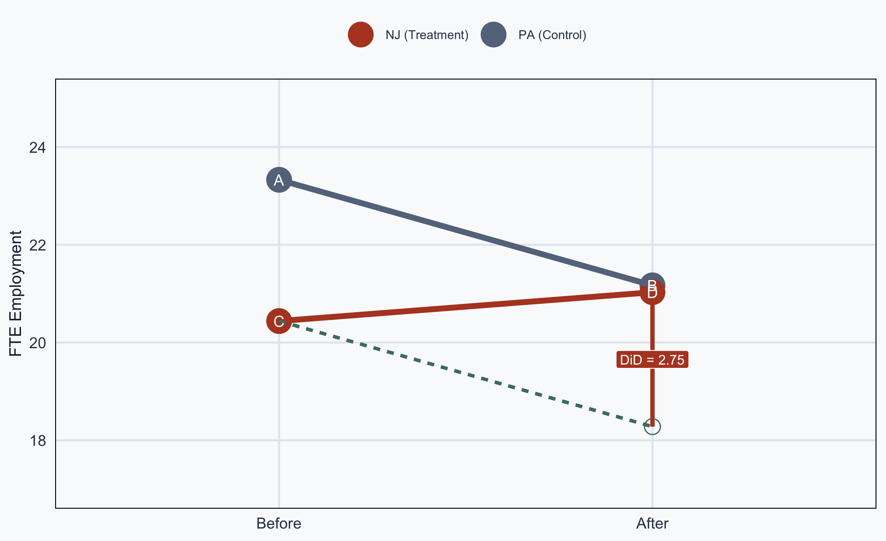
The DiD Regression Model
The causal effect is estimated by:
\[\color{#4a7c6f}{Y_{it}} = \beta_0 + \color{#1e293b}{\beta_1 \text{Group}_i} + \color{#64748b}{\beta_2 \text{Time}_t} + \color{#b44527}{\beta_3 (\text{Group}_i \times \text{Time}_t)} + \epsilon_{it}\]
Code
- \(\beta_0\): mean of control, pre-treatment
- \(\beta_1\): difference across groups (intercept shift)
- \(\beta_2\): difference over time (within-unit change)
- \(\beta_3\): the DiD (causal effect)
DiD with Regression Coefficients
| Group | Before | After | \(\Delta\) |
|---|---|---|---|
| Control | \(\beta_0\) | \(\beta_0 + \beta_2\) | \(\beta_2\) |
| Treatment | \(\beta_0 + \beta_1\) | \(\beta_0 + \beta_1 + \beta_2 + \beta_3\) | \(\beta_2 + \beta_3\) |
| \(\Delta\) | \(\beta_1\) | \(\beta_1 + \beta_3\) | \(\beta_3\) |
\(\beta_3\) = the causal effect of the intervention
Assumptions
Diff-in-Diff Assumptions
Parallel Trends Assumption
- Treatment and control follow the same pre-trend
- Treatment group would have continued like control
Timing
- Units sometimes receive treatment at different times
- Staggered adoption can distort estimates
Parallel Trends: Holds
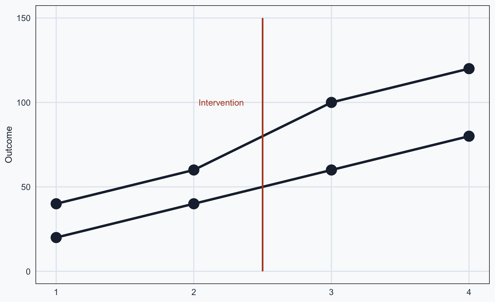
Pre-treatment trends are parallel \(\rightarrow\) DiD is valid
Parallel Trends: Violations
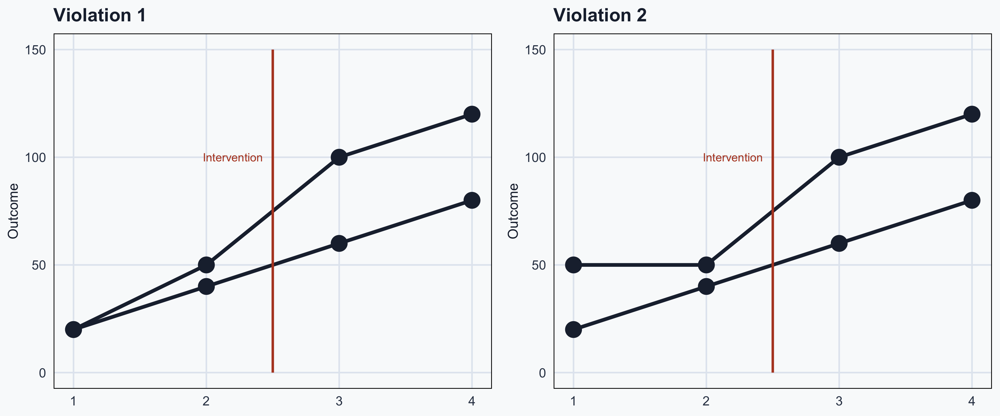
Pre-treatment trends diverge \(\rightarrow\) DiD is not valid
Testing Parallel Trends
Parallel trends cannot be proven — but we can look for evidence:
Event study plots: estimate treatment effects at each time period; pre-treatment coefficients should be near zero
Placebo tests: apply DiD to a fake treatment date; a significant effect suggests the assumption fails
Pre-trend testing: regress outcome on group \(\times\) time in the pre-treatment period; a significant coefficient signals diverging trends
Treatment Timing: Staggered Adoption
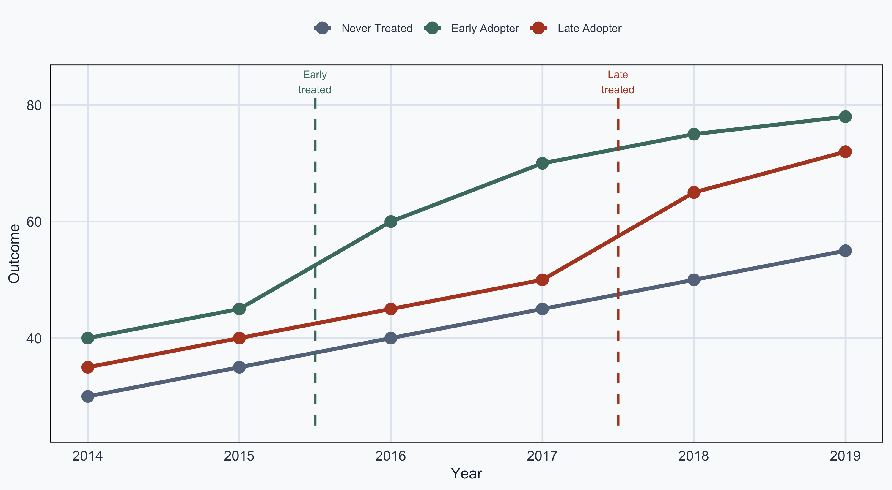
Already-treated “Early Adopters” used as controls for “Late Adopters” \(\rightarrow\) biased estimates
Staggered Adoption: The Problem
Standard two-period DiD assumes a single treatment date for all treated units
In practice, units often adopt at different times (e.g., states passing laws in different years)
The standard estimator uses already-treated units as controls — this biases \(\hat{\beta}_3\) when effects change over time
Solutions: Callaway & Sant’Anna (2021), Goodman-Bacon (2021) decomposition — use not-yet-treated units as controls and estimate group-time specific effects
Clustering Standard Errors
DiD data is typically panel data — repeated observations within units
Observations within the same unit (state, individual) are not independent
Standard errors that ignore this are too small \(\rightarrow\) false rejections
Example: Malaria DiD
Malaria Example Setup
Returning to the malaria example from Malawi:
- 1,000 individuals over 8 years (2013–2020)
- City A: no intervention (control)
- City B: mosquito nets distributed after 2017
Question: Do mosquito nets reduce malaria risk?
Malaria Maps: Before Intervention
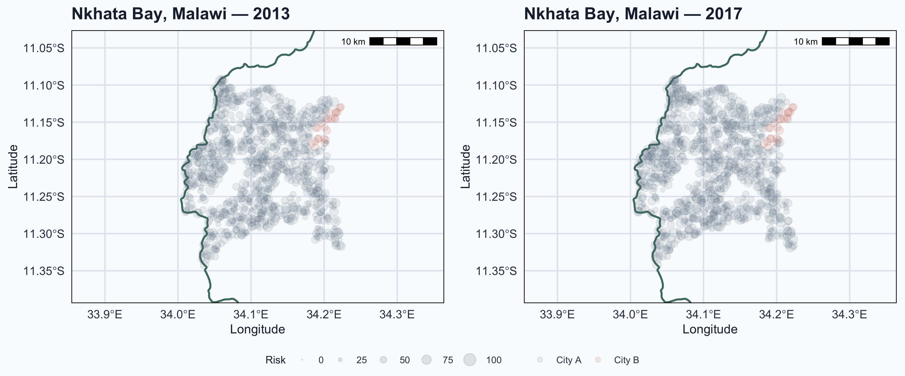
Malaria Maps: After Intervention
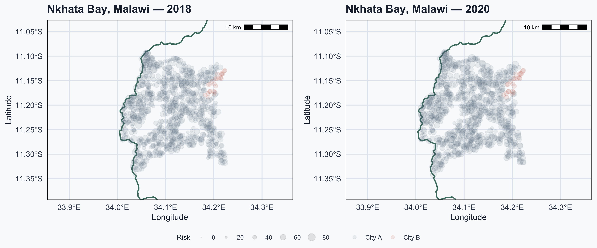
Malaria Risk Over Time
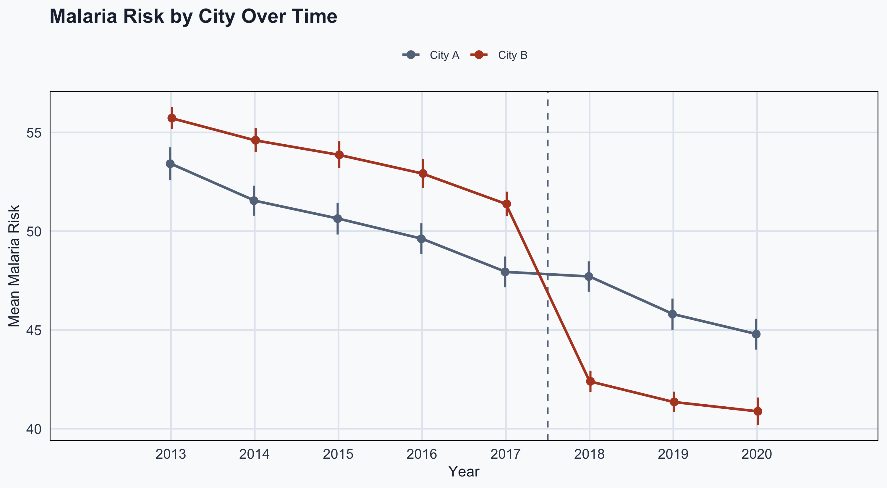
Malaria Risk: Incremental View
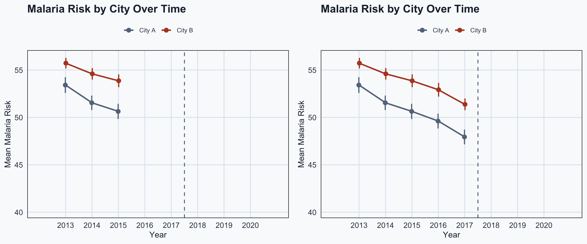
Parallel trends hold in the pre-treatment period
Malaria Risk: Post-Treatment
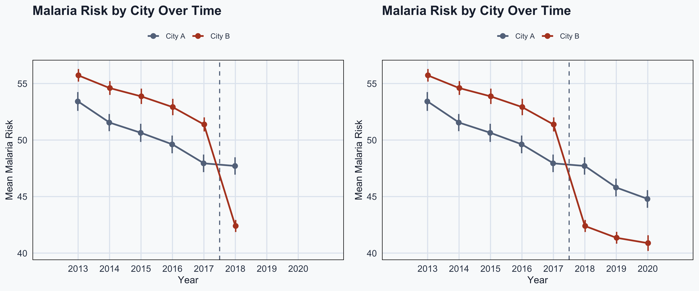
After 2017, City B diverges \(\rightarrow\) net effect is visible
DiD Model: Malaria
The effect is given by:
\[\color{#4a7c6f}{\text{Malaria}_{it}} = \beta_0 + \color{#1e293b}{\beta_1 \text{City B}_i} + \color{#64748b}{\beta_2 \text{After}_t} + \color{#b44527}{\beta_3 (\text{City B}_i \times \text{After}_t)} + \epsilon_{it}\]
Code
DiD Regression: Results
| (1) | |
|---|---|
| + p < 0.1, * p < 0.05, ** p < 0.01, *** p < 0.001 | |
| (Intercept) | 50.629*** |
| (0.179) | |
| cityCity B | 3.071** |
| (1.155) | |
| after | -4.532*** |
| (0.292) | |
| cityCity B × after | -7.623*** |
| (1.886) | |
| Num.Obs. | 8000 |
| R2 | 0.034 |
DiD Regression: Interpretation
- \(\beta_0\) = 50.63: avg. risk in City A before 2017
- \(\beta_1\) = 3.07: City B baseline difference
- \(\beta_2\) = -4.53: overall change after 2017
- \(\beta_3\) = -7.62: causal effect of nets
Being in City B after net distribution is associated with a 7.62-point reduction in malaria risk
Conclusion
Conclusion
Quasi-Natural Experiments exploit natural variation when RCTs are impractical
Differences-in-Differences compares treatment vs control, before vs after
- Causal effect = \(\beta_3\) (group \(\times\) time interaction)
- Requires the parallel trends assumption
Card & Krueger used DiD to show that raising New Jersey’s minimum wage increased fast-food employment by 2.75 FTEs — overturning the textbook prediction
In practice: test parallel trends, cluster standard errors, and watch for staggered adoption
Popescu (JCU) Statistical Analysis Lecture 13: Differences in Differences